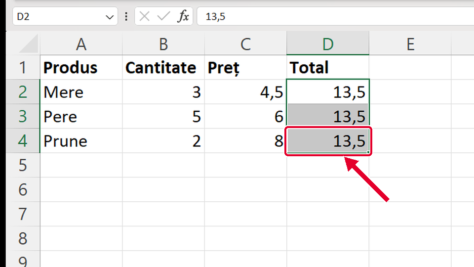
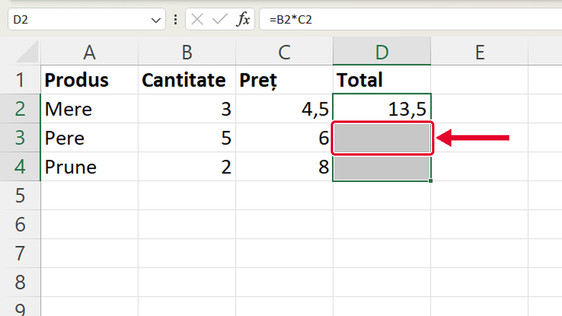
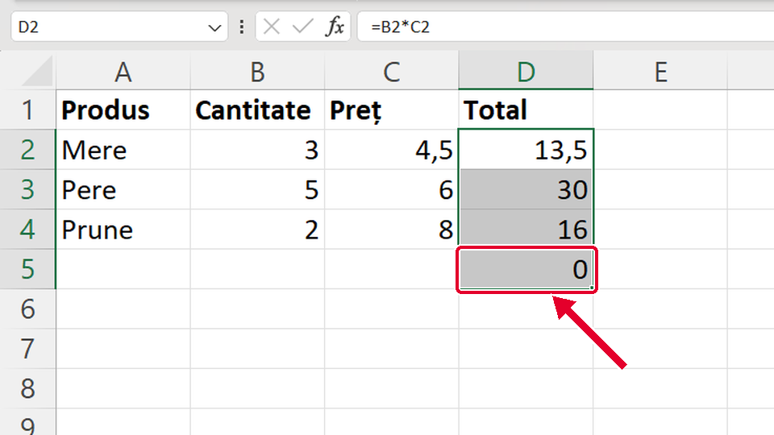

Început
Copiezi formula în jos
Taste: Spațiu = pauză / continuă · ← și → = pasul anterior / următor. Poți apăsa și pe film.

Legat de asta
Se deschid într-o filă nouă, ca să nu pierzi filmul de aici.
- ÎnainteCum scrii o formulă ↗
Întâi: cum scrii formula =B2*C2, pe care o copiezi aici.
- Același gestCum lărgești o coloană ↗
Ții apăsat clic stânga și tragi: la fel lărgești o coloană.
Dacă nu-ți iese
Alege ce vezi pe ecran.
Ai tras în jos, dar toate celulele au același număr (13,5).

De ce: În D2 era scris numărul 13,5, nu formula =B2*C2. Un număr se copiază la fel; doar o formulă se potrivește singură pe fiecare rând.
Ce faci:
- Dai clic pe D2 și te uiți în bara de formule: dacă nu începe cu =, e doar un număr.
- Scrii în D2 formula =B2*C2 și apeși Enter.
- Tragi din nou de pătrățelul din colț.
Taste: Enter
Ai tras în jos, dar celulele doar s-au colorat; D3 și D4 au rămas goale.

De ce: Ai tras din mijlocul celulei (cursorul era crucea albă groasă), nu din pătrățelul din colț. Așa doar selectezi.
Ce faci:
- Dai clic pe D2.
- Duci mouse-ul pe pătrățelul din colțul din dreapta-jos, până cursorul devine + subțire.
- Abia atunci ții apăsat și tragi în jos.
Ai tras prea jos: în D5 apare 0.

De ce: Formula s-a copiat și în rândul 5, unde nu sunt numere. Celulele goale înseamnă 0, iar 0 × 0 = 0.
Ce faci:
- Apeși Ctrl+Z ca să anulezi.
- Tragi din nou, oprindu-te la ultimul rând cu date (D4).
- Sau selectezi D5 și apeși Delete.
Taste: Ctrl+Z · Delete